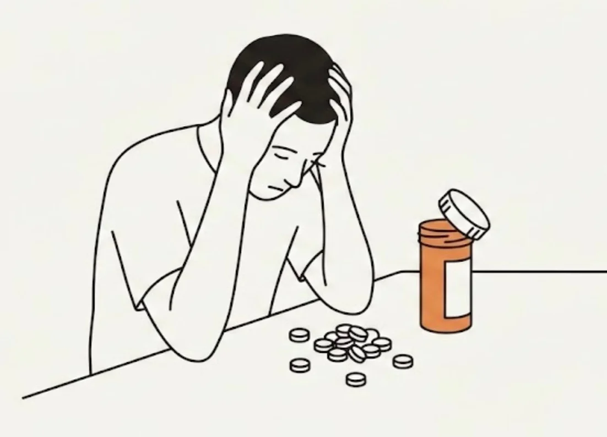

약사는 서른 개의 알약을 세어 주황색 병에 능숙하게 넣었다. 딸깍, 딸깍, 딸깍. 제럴드는 알약이 하나씩 떨어지는 것을 지켜보았다.
[The pharmacist counted out thirty tablets, sliding them into the orange bottle with practiced efficiency. Click, click, click. Gerald watched each one drop.]
“평소와 같습니다,” 약사가 뚜껑을 딱 닫으며 말했다. “남은 리필 횟수: 제로.”
[”Same as always,” the pharmacist said, snapping the lid shut. “Refills left: zero.”]
제럴드는 병을 주머니에 넣었다. 밖에서는 8월의 열기로 주차장이 아지랑이처럼 일렁였다. 그의 차는 오븐이었다. 그래도 그는 앉았다. 엔진은 끈 채로. 그리고 병을 열었다.
[Gerald pocketed the bottle. Outside, the parking lot shimmered with August heat. His car was an oven. He sat anyway, engine off, and opened the bottle.]
서른 개의 알약. 그는 직접 세어보았다. 서른 개.
[Thirty tablets. He counted them himself. Thirty.]
처방전에는 스물여덟 개라고 적혀 있었다.
[The prescription said twenty-eight.]
그는 다시 세었다. 조수석에 알약들을 늘어놓으며. 서른 개. 확실히 서른 개.
[He counted again, lining them up on the passenger seat. Thirty. Definitely thirty.]
제럴드는 조심스럽게 집으로 운전했다. 제한속도보다 정확히 10마일 느리게, 손은 10시와 2시 방향에. 부엌에서 그는 카운터 위에 알약들을 줄지어 배열했다. 다섯 개씩 여섯 줄. 서른 개.
[Gerald drove home carefully, ten miles exactly under the limit, hands at ten and two. In his kitchen, he arranged the tablets in rows on the counter. Six rows of five. Thirty.]
처방전 병에는 이렇게 적혀 있었다: 하루 한 알 복용. 28일분.
[The prescription bottle said: Take one daily. 28-day supply.]
그는 약국에 전화했다. 통화 중 신호. 다시 전화했다. 통화 중 신호. 그 후 두 시간 동안 열일곱 번 더 전화했다. 계속 통화 중이었다.
[He called the pharmacy. Busy signal. He called again. Busy signal. He called seventeen more times over the next two hours. Always busy.]
알약들은 카운터 위에 작고 하얀 이빨처럼 놓여 있었다.
[The tablets sat on his counter like tiny white teeth.]
제럴드는 하나를 집어 들고 빛에 비춰보았다. 3년 동안 복용해온 다른 모든 알약들과 똑같았다. 같은 모양, 같은 각인, 엄지손톱으로 긁었을 때 나는 쓴 냄새도 같았다.
[Gerald picked one up, held it to the light. Identical to all the others he’d been taking for three years. Same shape, same stamp, same bitter smell when he scratched it with his thumbnail.]
알약을 하나 먹어야 했다. 화요일이었다. 그는 항상 화요일에 하나씩 먹었다.
[He should take one. It was Tuesday. He always took one on Tuesday.]
하지만 서른 개가 있었다.
[But there were thirty.]
그는 알약들을 모두 변기에 버렸다. 소용돌이치며 내려가는 것을 지켜봤다. 그러고는 즉시 변기 안에 손을 집어넣었다. 낚아채고, 헐떡이며, 사라지기 전에 스물여섯 개를 건져냈다.
[He flushed them all, watched them swirl away, then immediately plunged his hand into the bowl, fishing, gasping, retrieving twenty-six before they disappeared completely.]
욕실 바닥에 젖은 알약 스물여섯 개.
[Twenty-six wet tablets on his bathroom floor.]
그는 확실히 하기 위해 일곱 번 세었다. 그리고 잠자리에 들었다.
[He counted them seven times to be sure, then went to bed.]
아침에 침대 옆 탁자 위에 서른 개가 있었다. 마르고 깔끔하게 정렬되어.
[In the morning, there were thirty on his nightstand, dry and neatly arranged.]